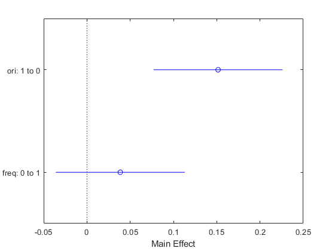
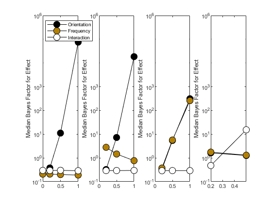
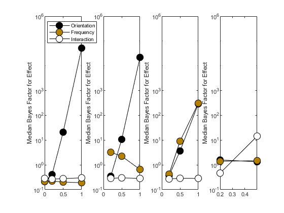
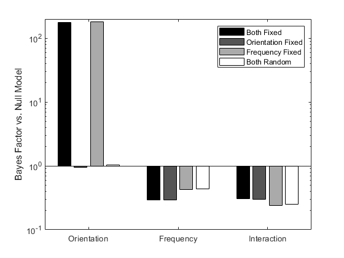

Bayes Factor
This is a Matlab class to run Bayes Factor analysis. The code was written by Bart Krekelberg (bart@vision.rutgers.edu) with some code taken from Sam Schwarzkopf's code and with inspiration from the R package by Richard Morey.
Currently the following statistical tests have been implemented
- One sample t-test (ttest)
- Two sample t-test (ttest2)
- N-Way Anova with fixed and random effects (linearMixedModel)
- Pearson Correlation (corr)
- Binomial Test ( binom )
For convenience, each of these tests also returns the results of a traditional, frequentist, test (i.e. p-values etc.)
Contents
Installation & Dependencies
The standard statistical analysis (and some utility functions) require the Statistics and Machine Learning Matlab toolbox.
All code is defined in a single class definition file (bayesFactor.m). Installation only requires adding the directory that contains this file to the Matlab search path. The installBayesFactor function does this for you.
Examples
Single sample T-Test
load stockreturns % Analyze the returns of stock #3: % Use the class name bayesFactor to call the ttest: [bf10,p] = bayesFactor.ttest(stocks(:,3))
bf10 =
2.7158
p =
0.0106
The p-value of the traditional test shows that the stock return was significantly different from zero, but the Bayes Factor shows that the evidence is weak (BF10<3).
Paired T-Test We are comparing student grades on two exams and want to know whether the grades changed from exam 1 to exam 2.
load examgrades
[bf10,p] = bayesFactor.ttest(grades(:,1),grades(:,2))
bf10 =
0.1014
p =
0.9805
The T-test tells us that the Null hypotheses (grades changed) cannot be rejected. The Bayes Factor is more informative, we can convert it to the Bayes Factor for the absence of an effect:
bf01 = 1/bf10
bf01 =
9.8621
Which means that there is strong evidence (BF>6) that there was no change in grades.
ANOVA
Rouder et al 2012 show data for 10 subjects performing a visual detection task. The targets vary in orientation and spatial frequency. These data are stored in table (data) in rouder2012Data.
The ANOVA function uses Monte Carlo Integration with parameters that are set in the bayesFactor class. Therefore we first need to construct an instance of the class, and then use that to call linearMixedModel (as opposed to other statistical function such as ttest ,| ttest2| , and corr, which can be called from the class itself (they are Static member functions):
bf= bayesFactor; % Need an instance of the bayesFactor class for ANOVA. % Load the data table: load rouder2012Data % Analyze full model (linear effects of frequency and % orientation plus their interaction) [bfFull,modelFull] = bf.linearMixedModel(data,'rt~ori*freq');
The modelFull is a LinearModel from the Matlab Statistics toolbox. It has some handy methods that allow us to view the data and the effects The ANOVA table and the firgure show a main effect of ori
modelFull.anova
figure;
plotEffects(modelFull);% Show main effects with error bars
ans =
4×5 table
SumSq DF MeanSq F pValue
_________ __ _________ _______ __________
ori 0.22952 1 0.22952 16.998 0.00021032
freq 0.014823 1 0.014823 1.0977 0.30175
ori:freq 0.0081225 1 0.0081225 0.60153 0.44306
Error 0.48611 36 0.013503
 The Bayes Factor shows that the Full model is better than the Null model (i.e. intercept only model)
bfFull
bfFull = 12.4738
To specifically look at the evidence for a main effect of orientation, we need to compare the Bayes Factor of the full model to a restricted model in which everything except the main effect of orientation is kept.
bfRestricted = bf.linearMixedModel(data,'rt~freq +ori:freq'); % Keep main of freq and ori:freq interaction.
The evidence for the main effect is the ratio of the Bayes Factors.
bfMain = bfFull/bfRestricted
bfMain = 181.1561
The evidence is overwhelmingly in favor of a main effect of orientation.
Figures from Rouder et al. 2012 (1)
Much of the mathematical basis for this package is developed in the Rouder et al paper. To test the package, I recreated some of the figures in their publication. The details are in rouderFigures, here I just show the results :
Figure 2 compares critical T-values for a traditional t-test with a Bayes Factor analysis.
rouderFigures(2);
Figure 4 shows Bayes Factor analysis for simulated data with different effect sizes.
rouderFigures(4,100); % Use 100 bootstrap sets .
 Figure 5 illustrates the influence of fixed and random effects
rouderFigures(5);
References
The mathematical underpinning of these tests can be found in the following papers:
- Rouder, J. N., Morey, R. D., Speckman, P. L. & Province, J. M. Default Bayes factors for ANOVA designs. J. Math. Psychol. 56, 356–374 (2012).
- Kass, R. E. & Raftery, A. E. Bayes factors. J. Am. Stat. Soc. 90, 733–795 (1995).
- Morey, R. D. & Wagenmakers, E. J. Simple relation between Bayesian order-restricted and point-null hypothesis tests. Stat. Probab. Lett. 92, 121–124 (2014).